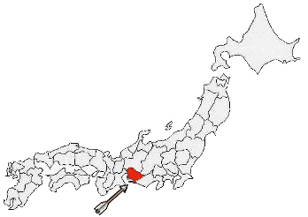

| Tokoname, Japan
The Pottery Path - A Walk Through the Pottery
Town of Tokoname

Introduction
Welcome to Tokoname "Yakimono Sanpomichi"
or Pottery Path. The "Yakimono Sanpomichi" is a path which
started as a natural tour of the various points of interest in Tokoname
in about 1972. This path is filled with old traditional houses,
workshops and buildings of great character and interest. It has
remained unchanged keeping its pottery-town atmosphere, unique to
Tokoname.
I'd like to explain a little about the City
of Tokoname before we start walking. Tokoname was already
well-known as a pottery town at the end of the 12th century. Tokoname
is one of the six historic pottery towns of Japan. The others are:
Bizen, Shigaraki, Tamba, Seto and Echizen. They are known as The
Six Ancient Kilns of Japan".
The Tokoname kilns were said to be the largest
and oldest of them all. Tokoname took advantage of its proximity
to the sea and extended the market throughout Japan by use of ships.
A large amount of old Tokoname pottery was found in many places
in Japan.
You can see the pottery from those days at The
Ceramic Art Institute. Although it was made more than 900
years ago, it is very artistic and shows the dynamic flashings and
brightness from natural wood-ash glaze.
Tokoname ware has a long history and tradition which
dates back from 900 years ago. Redware
was invented in the early 1800s. It developed with the production
of teaware like teapots and cups for green tea. Producing ceramic
pipes, bowls and jars has made Tokoname City prosperous. In the
1900s the mass production was introduced which saw the establishment
of production systems and improvement of kilns.
Nowadays a wide range of ceramics from construction tiles and sanitary
ware to table ware, vases and art pottery is produced. The total
annual production of the ceramic industry has reached approximately
110 billion.
We will begin the Pottery Path walk now. This area
flourished as the center of the ceramic industry in the early and
mid 1900s. They mainly produced ceramic pipes, bowls and jars. There
are some factories and potters' studios which are still operating,
but the number of them has declined compared with that of its heyday.
Before we start, I'd like you to remember some important
points. First, when you enter workshops and factories, please say
hello to the people to get permission to go in. Always be polite
and please don't touch works and goods thoughtlessly at factories
and studios. You may handle works and products at stores and galleries,
but please use care and hold them with both hands.
Please continue to The
Pottery Path - A Walk Through the Pottery Town of Tokoname.
Many thanks to Takeyoshi Kojima of the Tokoname
Homepage for the use of this article.
More Articles
|